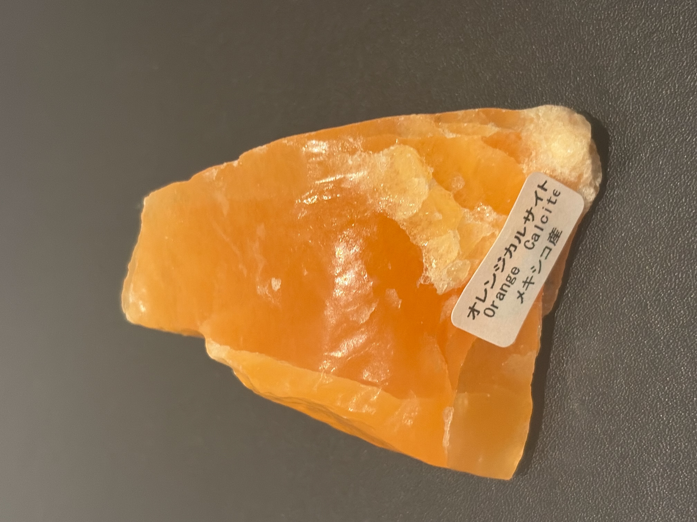

日記コーナー！随時更新していくよん
2026/11/21
本日はお外にお出かけに行ってきました！ふっふっふ。素晴らしいものを買ってきたのでご報告させていただきます。11/18~11/30の間、ジュンク堂本店で鉱物の展示販売してたんですよ、ラッキー。そこで、気に入ったものを買ってきちゃいました〜！

すべすべで冷たくて、オレンジみたいな色合い。触っても見てても癒されます。カルサイトという鉱物で、すっごく割れやすくて綺麗な菱形に割れる特徴があるそうです、流石に割る勇気はないけど。いやーずっと鉱物ショップとかで見かけて気になってたので、買えてよかったです！この他にも豚肉石とかテレビ石とか化石まで！見ててすっごく楽しかったので機会がある方は行ってみてください！
偶然知ったんですが、最近よく聞くQOLの正式名称ってクオリティオブライフらしいです。しかも面白いのが、Wikipediaによると規律性の高い生活を送った人の方が長生きする傾向があっても、規律性が低い人に比べてQPLが低くなるかもみたいなんです（信憑性は低いかもだけど）。確かに毎日規則的に真面目な生活を送ってる人よりも、友達とオールしたり、毎日楽しそうにしてる人の方が幸せなのかもしれません（幸せの基準なんて人それぞれだけど、少しずつちょっとした刺激はあっても良い的な？）
朝４時に目が覚めました！ここまで早起きだとよくないんじゃないかとも思うんですが、早朝の家族がまた寝ている静かで真っ暗時間帯って落ち着くというか、勉強も捗るのでまあいいかなって感じですね。
2026/11/20
一日目！ページも無事増築できて、こうやってやりたいことを形にできてくると、ついに主もプログラマーに一歩近づいたのかな？と嬉しくなってきます。話は変わりますが、このサイトもそうですし、写真サイトの方を作るときも忘れずに意識していることがあります。それは、「主にとって綺麗だったり大切なものをどんどん詰め込むつもりで作る！です」綺麗な写真や、一般論じゃなくて自分にとって好きな色、そういうものを詰め込んでいくと、サイトが宝箱のようなドロップス缶のような大好きな形になっていって、見ていてとても楽しくなってきます。まあですので、偶然訪れた方も気が向いた時にサイトの状態を見ていただけると、大切なものを共有できる気がして主もとても嬉しいです、現時点ではまだurl知ってる人しか見れない設定にしてますが。本日の話は以上！最近寒いので皆さんもあったかくしてお早めにお休みください〜